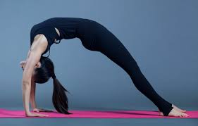
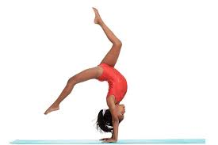
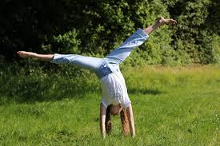
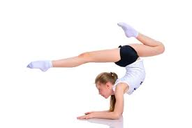

Gymnastics Tips for Beginners
Welcome to Gymnastics Tips – Your Guide to Balance, Strength, and Skill
Whether you're a beginner just starting to explore gymnastics or an experienced athlete
looking to refine
your technique, this site is here to support your journey. Gymnastics is a powerful blend of athleticism,
discipline, and creativity—and mastering it takes time, patience, and the right knowledge. Here, you’ll find
practical tips, technique breakdowns, and advice for training smarter and staying motivated.

Learn at Your Own Pace
Everyone progresses in gymnastics differently, and that’s okay. Our tips are designed to
help you improve
your skills at your own speed—whether you're learning your first cartwheel, building strength for
handstands, or perfecting your bar routine. You’ll also find guidance on warm-ups, injury prevention,
conditioning, and how to train safely both at home and in the gym.

All Ages and Skill Levels
This site is for anyone who loves gymnastics—from young kids with big dreams to teens
and adults looking to
stay active and try something new. You don’t have to be on a team or in a formal class to benefit.
Our goal
is to make gymnastics more accessible by offering clear, helpful information you can use anywhere.

Let’s Grow Together
Gymnastics isn’t just about flips and tricks—it’s about setting goals, overcoming
challenges, and enjoying
the process. Explore the site, try out new tips, and come back often for fresh content and
inspiration.
Whether you're practicing on a mat at home or working hard in the gym, we’re here to cheer you
on.
